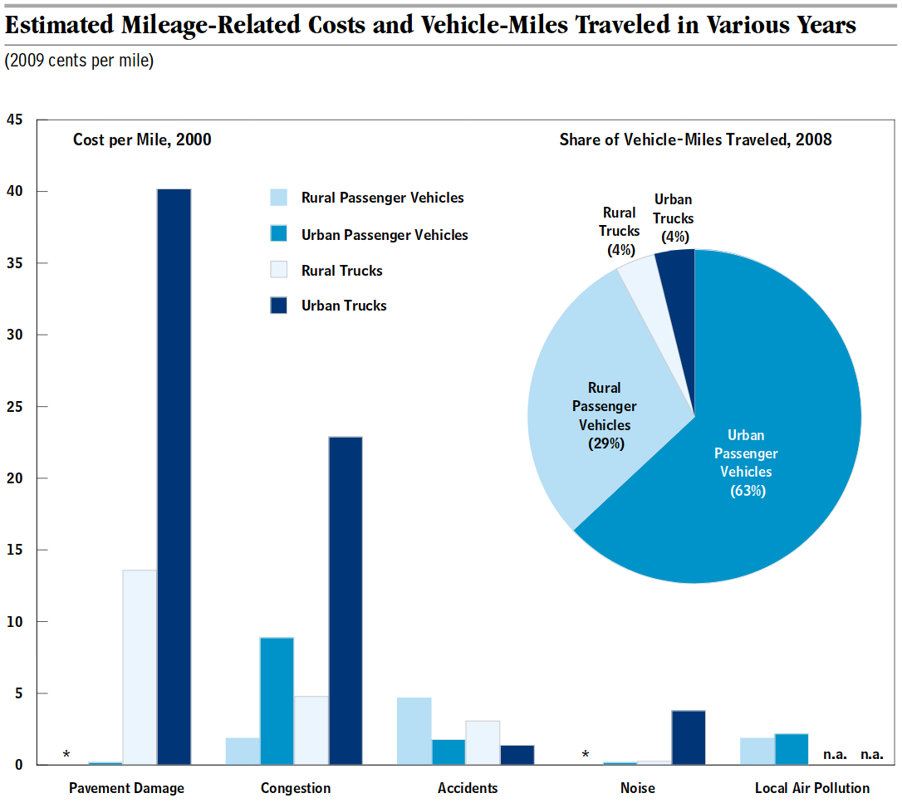

We all know the basic concept of fairness: “If you break it, you bought it”. Heavy tractor trailers are breaking our roads, but not buying them.
Americans spend a lot on roads: 1% of everything we make. That is $595 per person. Traditionally, we’ve paid that through a tax on fuel. A fuel tax sounds like it should make sense: if you drive more, you should pay more and those who drive more, usually buy more gas or diesel.
Except, it’s not that simple. A fully-loaded tractor trailer does 10,000 times as much damage to the road as a car but it only uses 4.4 times as much fuel.
A heavier vehicle doesn’t just do more damage to the road — it does a lot more damage. If a vehicle has A axles and W weight-per-axle, then the road damage is calculated using this formula: A*W*W*W*W. Your standard family car has 2 axles, each carrying 1 ton of weight. So it does 2*1*1*1*1=2 units of damage to the road.
A fully-loaded tractor trailer has 5 axles, each carrying 8 tons. It does 5*8*8*8*8 = 20,480 units of damage to the road. Or roughly 10,000 times as much as the car.
 Image source: https://www.cbo.gov/sites/default/files/112th-congress-2011-2012/reports/03-23-highwayfunding.pdf
The fuel used by a vehicle is mostly related to its aerodynamics, not its weight. Tractor trailers are less aerodynamic than a car and get an average 5.6 miles per gallon. The average car gets 24.7 miles per gallon. So, the tractor trailer uses 4.4 times the fuel.
So, tractor trailers are doing 10,000 as much damage and paying only 4.4 times as much fuel tax. They pay some other taxes, HVUT and a tax on tires, and the tax on diesel is slight higher than on gasoline, but these don’t amount to much. Not paying much fuel tax would be bad enough, but we haven’t raised the fuel tax since 1993. The shortfall is coming out of everyone’s other taxes, so tractor trailers are paying even less!
The solution is to tax tractor trailers by weight and distance. Routes can be submitted via the internet and checked by randomly weighing trucks. New Mexico does a version of this now. This issue is not as important as health care or the military, but this estimate and this one say it would save $4.50 per year for every American, adult and child.